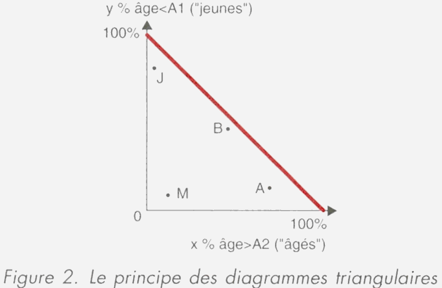
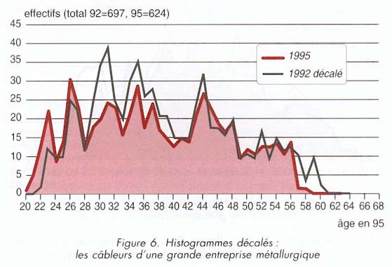
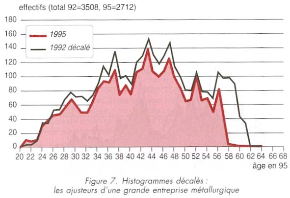
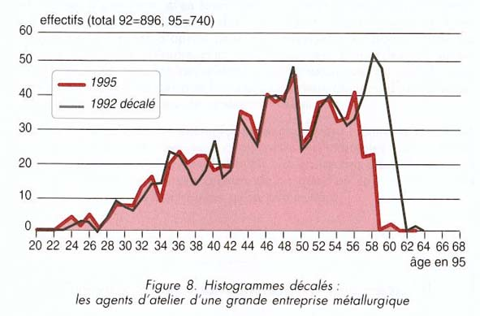

Lire l’âge pour interpréter le travail
L’analyse des structures d’âges recentrée visent deux objectifs qui se recouvrent en partie.
• Fournir un cadre démographique général, une description des pyramides d’âge et de leurs évolutions passées, un point d’appui pour des prévisions,
• Amorcer une réflexion sur les mouvements de population et sur les mécanismes de sélection qui relient l’âge aux exigences du travail.
Cet outil permet de travailler à partir de données sur l’âge. Les représentations graphiques obtenues permettront de susciter des réflexions, des interrogations puis d’étoffer l’analyse, mais non d’en valider les orientations. Seule une connaissance du contexte de l’entreprise, de certaines caractéristiques du travail, des transformations passées et à venir donneront à cette lecture sa portée véritable.
Le cadre d’analyse de la démographie du travail
L’hypothèse sous-jacente à l’analyse des liens entre la démographie et le travail est la suivante
: les affectations de la main d’œuvre à tel ou tel âge sont liées aux exigences du travail, qui déterminent en partie la possibilité (et le souhait) d’accéder à une situation de travail donnée, d’y demeurer, ou de s’en éloigner. Ainsi, si l’on regarde à un moment donné qui est dans quelle situation de travail en fonction de l’âge, on obtient une structure d’âge qui ne reflète pas simplement les relations âge/travail mais aussi les mécanismes de sélection et les mobilités.
Mais, les entreprises sont peu outillées pour opérer des liens entre la démographie et le travail. Aussi, peu d’hypothèses sont faites entre certaines caractéristiques du travail et de l’organisation qui pourraient contribuer à structurer des populations et faire apparaître d’éventuels mécanismes de sélection par le travail se traduisant surtout par des différences de structure d’âges et pouvant aboutir à la mise en œuvre de plans d’action spécifiques. Or des analyses fines des caractéristiques de la population en lien avec les caractéristiques du travail réalisé par cette population révèlent bien des éléments sur les contraintes de travail. En ce domaine, les " données " sont en général à construire, et leur interprétation à élaborer. Les outils démographiques ouvrent des perspectives de compréhension sur les évolutions dynamiques des populations et des individus.
Si, dans un établissement, dans un atelier ou un service, pour une catégorie de postes, un fort volant de jeunes se maintient on peut explorer les exigences sélectives du travail et poser le problème des ré-affectations ultérieures. Si une catégorie dévie progressivement d'une structure " jeune " vers une structure " moyenne ", on peut s'interroger sur la compatibilité entre les caractéristiques du travail et le vieillissement des salariés concernés. Si une autre catégorie rassemble durablement des salariés âgés, on va s'intéresser à leur passé professionnel, aux causes de leurs changements de postes éventuels. On se demandera également si les effectifs de la catégorie dans quelques années, et les évolutions prévues dans les techniques et l'organisation du travail, sont cohérents avec ce rôle de " catégorie d'accueil" qu'elle semble exercer.
Page 1 :
Page 3 :
Page 4 :
Page 5 :
Page 6 :
Page 7 :
Caractériser ce que sont les 3 graphiques :
Les structures d’âges peuvent être synthétisées sous la forme d’un diagramme triangulaire. En effet, lorsqu’on a besoin d’indicateurs synthétiques, un ratio du type : "% de salariés de plus de tel âge " ou " de moins de tel âge " présente davantage d’intérêt que l’utilisation de la moyenne d’âge, par exemple, apportant une représentation assez floue de la réalité voir trompeuse. Et, cet indicateur représentera d’autant mieux la réalité des structures d’âges qu’il fixera deux seuils : une proportion de " jeunes ", en deçà d’un âge A1, une proportion " d’âgés " au-delà d’un âge A2. En voici l’illustration graphique :

On porte en abscisse la proportion " d'âgés ", dont l'âge est supérieur à A2. En ordonnées figure la proportion de " jeunes ", d'âge inférieur à A1.
Les points situés vers le haut et la gauche (point J) représentent des populations à forte proportion de jeunes, avec très peu d'âgés. A l'inverse, les points en bas à droite (point A) signifient qu'il y a beaucoup d'âgés et peu de jeunes. En bas et à gauche (point M) on trouvera des populations avec peu de jeunes et peu d'âgés, donc avec une majorité d'âges moyens. Vers le milieu de l'hypoténuse (point B) on trouvera des distributions dites " bimodales ", avec à la fois une proportion importante de jeunes et d'âgés, mais peu d'âges moyens. Vers le milieu du triangle on trouve la représentation des distributions dans lesquelles les trois catégories d'âges sont aussi bien représentées.
Ce mode de représentation offre une bonne cartographie d'un ensemble de populations, en permettant d'utiles comparaisons au premier coup d'œil. Ces représentations graphiques permettent d’entrevoir la diversité de la répartition des âges selon ces secteurs.
L’examen direct des structures d’âge détaillées, à un moment donné, présentées en histogrammes, permet d’effectuer une description du profil d’une structure d’âge :
• Si la structure est répartie sur tous les âges, elle révèle une stabilité démographique à long terme : départs et arrivées s’effectueront de façon régulière.
• Si, au contraire, le profil est centré sur les âges intermédiaires sans pour autant exclure une part relative de salariés jeunes et de seniors, alors la population est a priori " vieillissante ". Peu de départs en retraite et
peu de recrutements sont prévus dans les prochaines années, mais leur nombre devrait augmenter au fil du temps. Les questions porteront sur deux aspects : le maintien au travail d’une population vieillissante d’une part, le côtoiement de salariés d’âges très différents d’autre part.
• Le profil démographique peut être centré soit sur un âge extrême (jeunes ou âgés) soit sur les deux âges extrêmes. Il questionne la continuité des savoir-faire et les modalités de leur transmission. Ces configurations combinent les questions identifiées pour les situations précédentes.
Sur l’interprétation d’un histogramme à un moment donné, il n’y a guère d’indications méthodologiques à fournir qui aient une portée générale.Une structure d’âges observée à un moment donné a une visée purement descriptive. Des dispositifs d’analyse impliquant des dates différentes pourront être beaucoup plus précis. Mais dans tous les cas, ce sont le contexte de l’entreprise, la connaissance de certaines caractéristiques du travail, la vision que l’on a des transformations à venir qui donneront à cette lecture sa portée véritable. Les chiffres permettent de susciter des réflexions, des interrogations puis d’étoffer l’analyse, mais non d’en valider les orientations.
Certaines caractéristiques du travail et de l’organisation contribuent à structurer des populations et faire apparaître d’éventuels mécanismes de sélection par le travail se traduisant surtout par des différences de structure d’âges. Cette réalité peut s’appréhender à travers une représentation graphique appelée histogramme décalé. Là encore, la représentation graphqiue permet de susciter des réflexions, des interrogations puis d’étoffer l’analyse, mais non d’en valider les orientations. C’est la connaissance du contexte de l’entreprise, de certaines caractéristiques du travail, de la vision que l’on a des transformations passées qui donneront à cette lecture sa portée véritable. Ce mode de représentation compare 2 histogrammes que l’on superpose. Pour réaliser ce graphique, il est nécessaire d’avoir les effectifs d’une population à deux dates respectives que nous apellerons D et D + n . La méthode consiste à décaler le premier histogramme (correspondant à la répartition de la population à la date D) de quelques années vers la droite (sur un intervalle qui correspond à l’écart n entre les deux dates D et D+n ), et à superposer le deuxième histogramme (correspondant à la répartition de la population à la date D + n) sur le premier ainsi décalé. Si la population a simplement vieillit, sans aucun mouvement (départ ou recrutement), les deux courbes vont se recouvrir. Sinon, les distances entre elles indiqueront en quoi l’évolution constatée s’écarte de la simple dérive chronologique.
Nous allons souligner l'intérêt de cette approche à partir de quelques exemples, portant sur des évolutions à trois ans de distance (1992-1995) dans des emplois différents d'une grande entreprise de la métallurgie.

Ce graphique nous renseigne sur :
Commentaires :

Ce graphique nous renseigne sur :
Commentaires :

Ce graphique nous renseigne sur :
Commentaires :
Le recrutement à toutes les tranches d’âge amène à analyser ce travail au regard de la fonction " d'accueil " que ce type d'emploi paraît assurer.
La question se pose également de savoir si l'entreprise compte garder le nombre actuel de postes dans cet emploi, voire I'augmenter, ou si des restructurations, des sous-traitances, allaient restreindre les marges de manœuvre dans ce domaine.
La plupart des commentaires concernant les histogrammes d'âges, leur variation dans le temps, renvoient à des interrogations sur les mouvements de la main-d'œuvre à chaque âge. Une question complémentaire mérite à chaque fois d'être posée : si l'on quitte tel type d'emploi vers tel âge, où va-t-on ? Si l'on arrive dans tel autre emploi vers tel âge, d'où vient-on ? La première de ces questions permet de s'intéresser aux caractéristiques du travail dans l'emploi d'accueil. La deuxième renvoie aux exigences de l'emploi précédent. L'une et l'autre désignent aussi un enjeu dans le domaine du transfert des compétences d'une situation à une autre. Nous pouvons difficilement développer ici les modes de raisonnement auxquels ces traitements statistiques donnent lieu, les données nécessaires étant rarement disponibles, et difficiles à élaborer. Dans les trois exemples cités précédemment, on relevait par exemple que les arrivées dans l'emploi de câbleur étaient presque toutes en provenance de l'extérieur de l'entreprise (ce qui pouvait justifier une investigation spécifique sur les parcours professionnels antérieurs), alors que les départs s'effectuaient majoritairement vers certains emplois de " mécaniciens ", en expansion à cette période. Chez les ajusteurs, les départs de jeunes s'effectuaient plutôt en direction de la catégorie des " mécaniciens " alors que ceux des âgés aboutissaient chez les " agents d'atelier ", dont la fonction d'accueil était ainsi plus précisément repérée.
L’examen des structures d’âges s’enrichit si l’on peut faire des comparaisons dans le temps.
L’analyse l’évolution des structures d’âges permet de répondre aux questions suivantes :
• Quelles sont les évolutions démographiques passées et à venir (perspectives d’entrées ou de sorties de salariés, évolution de la répartition par âge) ? Quelle tendance la structure démographique suit-elle (vieillissement, rajeunissement...) ?
• Quelles variations dans la répartition des salariés par âge entre hier, aujourd’hui et demain ?
• À quelle étape historique les variations démographiques observées correspondent-elles ?
• Au regard des projets de développement à venir, quelles conséquences sur la répartition des salariés entre les métiers et/ou les secteurs d’activité selon leur expansion ou disparition probable (identification de nouveaux besoins en compétences, savoir-faire) ?
- Regard rétrospectif :
Il s’agit de représenter graphiquement les structures d’âge correspondant à une situation antérieure et la comparer à la situation actuelle. Les repères rétrospectifs sont définis en fonction de l’histoire de l’entreprise et des changements qui l’ont affectée.
Les évolutions des structures d’âges peuvent être synthétisées sous la forme d’un diagramme triangulaire. L’évolution entre plusieurs moments sera indiquée par le sens de la flèche qui caractérise les principales caractéristiques du changement : rajeunissement, dérive vers les âges moyen ou élevés....
- Regard prospectif
De même il est intéressant de réaliser une projection dans cinq et/ou dix ans sur la base des effectifs actuels et des hypothèses de turn-over et de recrutement. Dans ce cas les fichiers seront à construire, en fonction des hypothèses retenues.
Les réflexions prospectives peuvent également être représenter avec un diagramme triangulaire, pour visualiser des scénarios pour l’avenir – en ayant fait au préalable des hypothèses de départs et de recrutement. Ce type de représentation permet de simuler un scénario repère qui serait le résultat d'une non-action : que se passerait-il dans telle population si aucun mouvement ne se produit en dehors des départs en retraite et du recrutement de jeunes à hauteur de ces départs ?
Cette analyse permet également de commencer à entrevoir la diversité des tendances, selon les différents établissements d’une même entreprise, selon les grands secteurs ou les grandes catégories de population. Appréhender cette diversité permet d’amener les acteurs de l’entreprise à penser différents niveaux de réponses à la question du vieillissement.
Page 8 :
Page 10 :
Les seuils A1 (30 ans ? 35 ? 37 ?…) et A2 (45 ans ? 50 ? 53 ?…) sont choisis en fonction des caractéristiques de la population et du travail.
Il est tout à fait possible de changer ces seuils - ce qui permet notamment de ne pas désigner un " seuil d'entrée dans la catégorie des âgés ", établi une fois pour toutes.
Page 12 :
Page 14 :
Page 15 :
Page 18 :
Page 21 :
Page 22 :
Les seuils A1 (30 ans ? 35 ? 37 ?…) et A2 (45 ans ? 50 ? 53 ?…) sont choisis en fonction des caractéristiques de la population et du travail.
Il est tout à fait possible de changer ces seuils - ce qui permet notamment de ne pas désigner un " seuil d'entrée dans la catégorie des âgés ", établi une fois pour toutes.
Page 25 :